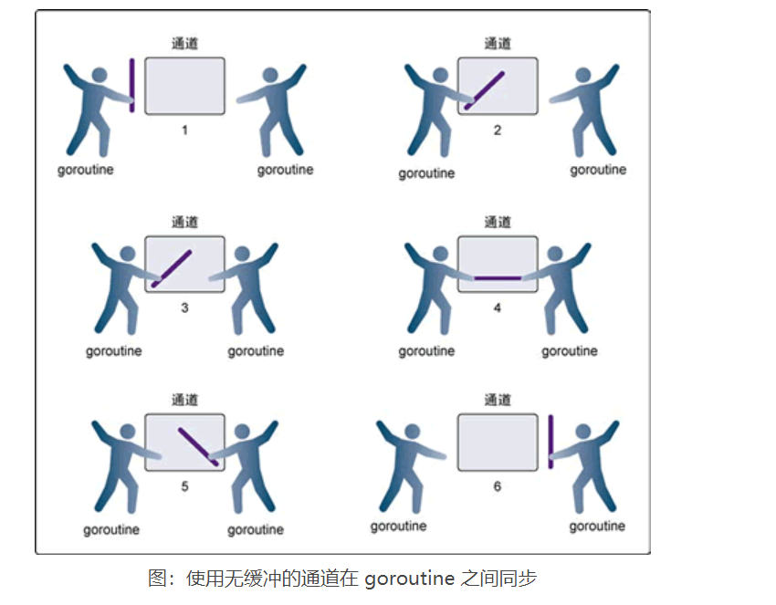

Contents
8.4. 无缓冲的通道¶
Go语言中无缓冲的通道（unbuffered channel）是指在接收前没有能力保存任何值的通道。这种类型的通道要求发送 goroutine 和接收 goroutine 同时准备好，才能完成发送和接收操作。
如果两个 goroutine 没有同时准备好，通道会导致先执行发送或接收操作的 goroutine 阻塞等待。这种对通道进行发送和接收的交互行为本身就是同步的。其中任意一个操作都无法离开另一个操作单独存在。
阻塞指的是由于某种原因数据没有到达，当前协程（线程）持续处于等待状态，直到条件满足才解除阻塞。
同步指的是在两个或多个协程（线程）之间，保持数据内容一致性的机制。
无缓冲的通道（unbuffered channel）是指在接收前没有能力保存任何值的通道。
这种类型的通道要求发送 goroutine 和接收 goroutine 同时准备好，才能完成发送和接收操作。 如果两个goroutine没有同时准备好，通道会导致先执行发送或接收操作的 goroutine 阻塞等待。
代码示例
// 这个示例程序展示如何用无缓冲的通道来模拟
// 2 个goroutine 间的网球比赛
package main
import (
"fmt"
"math/rand"
"sync"
"time"
)
// wg 用来等待程序结束
var wg sync.WaitGroup
func init() {
rand.Seed(time.Now().UnixNano())
}
// main 是所有Go 程序的入口
func main() {
// 创建一个无缓冲的通道
court := make(chan int)
// 计数加 2，表示要等待两个goroutine
wg.Add(2)
// 启动两个选手
go player("Nadal", court)
go player("Djokovic", court)
// 发球
court <- 1
// 等待游戏结束
wg.Wait()
}
// player 模拟一个选手在打网球
func player(name string, court chan int) {
// 在函数退出时调用Done 来通知main 函数工作已经完成
defer wg.Done()
for {
// 等待球被击打过来
ball, ok := <-court
if !ok {
// 如果通道被关闭，我们就赢了
fmt.Printf("Player %s Won\n", name)
return
}
// 选随机数，然后用这个数来判断我们是否丢球
n := rand.Intn(100)
if n%13 == 0 {
fmt.Printf("Player %s Missed\n", name)
// 关闭通道，表示我们输了
close(court)
return
}
// 显示击球数，并将击球数加1
fmt.Printf("Player %s Hit %d\n", name, ball)
ball++
// 将球打向对手
court <- ball
}
}